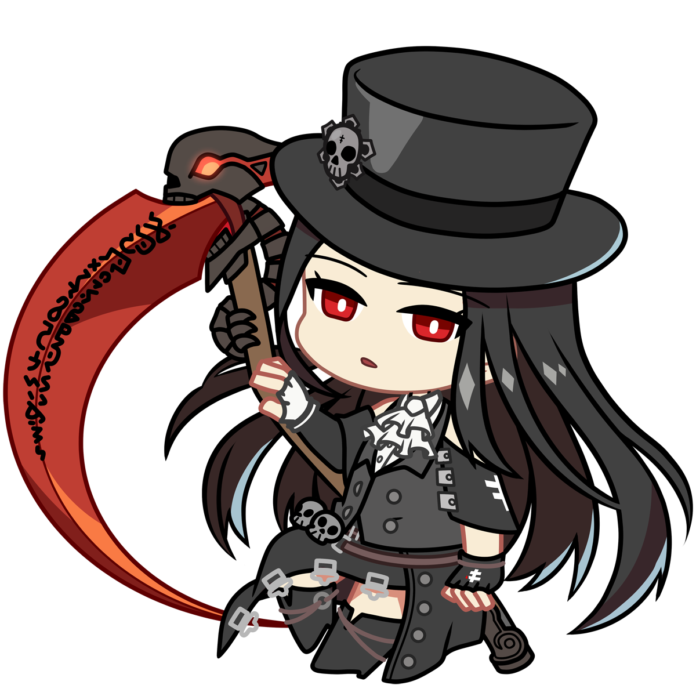

Bienvenue Visiteur!
Sur ce site, tu trouveras plein d'informations me concernant. Bonne visite!
Qui suis-je ?
Tu as atterri sur le portfolio d'Adam, aussi connu sous le pseudo "Issuko" sur le web.
Objectifs
Après avoir fini un lycée général avec des options plutôt littéraires, j'ai décidé de m'orienter en informatique, ce qui me correspond davantage.